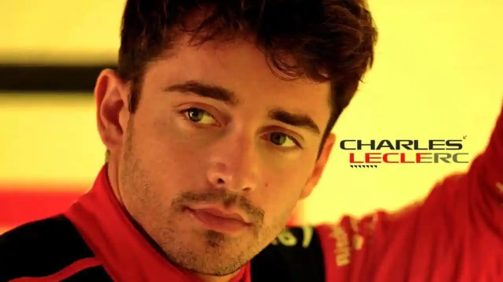
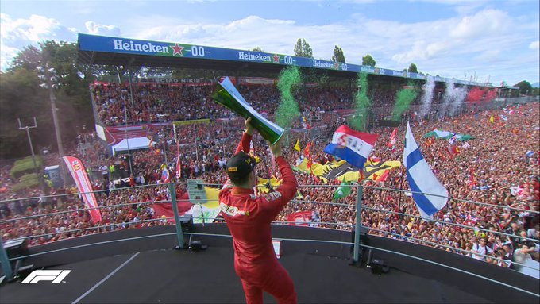

Charles Marc Herve Perceval Leclerc iz Monte Carla (rojstvo 16. oktober 1997), je monaški dirkač, aktiven v Formuli 1 s Scuderia Ferrari. Prvak GP3 leta 2016 in prvak Formule 2 leta 2017 je bil del Ferrarijeve vozniške akademije od leta 2016 do 2018 ko pa je dirkal v Formuli1 za Sauber (Alfa Romeo). Od leta 2019 pa se je preselil k Scuderii Ferrari in leta 2022 dosegel najboljši osebni rezultat ko je prvenstvo končal na drugem mestu. Je tretji monaški dirkač, ki je sodeloval v svetovnem prvenstvu Formule 1 po Louisu Chironu in Olivierju Beretti, pa tudi najmlajši, ki je zmagal dirko z avtomobilom ekipe iz Maranella.
Link do wikipedijeSin Hervéja Leclerc (voznika formule 3 v 80. in 90. letih 20. stoletja),ki je umrl leta 2017 pri 54 letih (štiri dni preden je Charles zmagal v Azerbajdžanu v Formuli 2). Charles ima starejšega brata Lorenza in mlajšega brata Arthurja voznik za Ferrarijevo vozniško akademijo. V otroštvu je Leclerc tesno družil s pilotom iz Nice Julesom Bianchijem, ki je umrl med dirko Formula 1 na Japonskem leta 2015. Leclerc je začel dirkati s karti na stezi, ki jo je vodil Bianchijev oče, v Brignolesu. Tako kot Bianchi se je tudi Leclerc pozneje pridružil družbi za upravljanje ARM, ki jo je vodil Nicolas Todt. Odkar je v Formuli 1, je dirkal s številko 16, svoj rojstni dan in vsoto (1+6) njegove najljubše številke, 7. Poleg francoščine, ki je njegov materni jezik, tekoče govori italijanščino in angleščino.
Link do javne spletne strani LeclercaLeclerc je svojo kariero začel z Go karti leta 2005, ko je osvojil francosko prvenstvo PACA in tudi v naslednjih letih 2006 in 2008. Nadaljeval je z dirkanjem v KF3 leta 2011, ko je osvojil svetovni pokal CIK-FIA KF3, Akademijo CIK-FIA trofejo in ERDF Junior Kart Masters. Leto 2013 je bilo zadnje leto, ko je Leclerc dirkal v svetu kartinga. Dosegel je 6. mesto na evropskem prvenstvu CIK-FIA KZ1 in 2. mesto na svetovnem prvenstvu CIK-FIA KZ za enim voznikom, bodočim svetovnim prvakom Formule 1 Maxom Verstappnom.
Leta 2014 je Leclerc prešel na enosedeže in dirkal v Formuli Renault 2.0 Alps za britansko ekipo Fortec Motorsports. V sezoni je dosegel sedem uvrstitev na stopničke, od tega dve zmagi. Prvenstvo je končal na 2. mestu za Nyckom de Vriesom.
Leclerc je leta 2015 sodeloval v Evropski Formuli 3, ko je vozil dirkalnik nizozemske ekipe Van Amersfoort Racing. Na prvi preizkušnji sezone, ki je potekala v Silverstonu, je Leclerc osvojil najboljši položaj na štartu in v istem vikendu zmagal svojo prvo dirko. Leclerc je sezono končal na 4. mestu s 3 skupnimi zmagami.Leclerc je takoj zmagal na prvi dirki na dirkališču v Kataloniji in to ponovil z zmagama na dirkah v Avstriji in Belgiji. 26. novembra je bil po prvi dirki v Abu Dabiju okronan za prvaka GP3 kljub odstopu med drugo dirko.
Teden po njegovi osvojitvi naslova v GP3 je bilo potrjeno, da bo Leclerc z ekipo Prema Racing stopil v Formulo 2 za sezono 2017. Leclerc dominira v prvem delu sezone s 5 zmagami in 7 stopničkami na prvih 12 dirkah. Na prvih 7 dirkah Formule 2 dobi vseh 7 pole positionov. Med vikendom Velike nagrade Jereza je Charles osvojil osmo poleposition, s čimer je podrl rekord za največ teh v eni sezoni. Po odlični vrnitvi, ki jo je kronal z mojstrskim prehitevanjem v zadnjem krogu na zadnji dirki, je prišel do svoje sedme zmage v sezoni in izenačil rekord Stoffela Vandoorna glede zmag v sezoni. Prvenstvo je končal z 282 točkami in tri dirke pred koncem postal svetovni prvak.
| Sezona | Ekipa | Dirke | Zmage | Pole Position | Uvrščen med prvimi tremi | Skupno število točk sezone | Sezonska končna pozicija |
| 2018 | Sauber (Alfa Romeo) | 21 | 0 | 0 | 0 | 39 | 13. |
| 2019 | Scuderia Ferrari | 21 | 2 | 7 | 10 | 264 | 4. |
| 2020 | Scuderia Ferrari | 17 | 0 | 0 | 2 | 98 | 8. |
| 2021 | Scuderia Ferrari | 21 | 0 | 2 | 1 | 159 | 7. |
| 2022 | Scuderia Ferrari | 22 | 3 | 9 | 11 | 308 | 2. |
Po umiku na Hockenheimringu (Nemčija) pod nalivom in slabem uvrščanju na Hungaroringu (Madžarska) je v Belgiji dosegel pole position in predvsem svojo prvo zmago v Formuli 1 (posvečeno dan prej umrlemu Anthoinu Hubertu) prvo absolutno za Monačana v cirkusu, pa tudi prva zmaga v sezoni za Ferrari. S to potrditvijo pri 21 letih in 10 mesecih postal najmlajši voznik, ki je zmagal na Grand Prixu s Ferrarijem, s čimer je po 51 letih premagal prejšnji rekord Jackyja Ickxa. Naslednji teden se je ponovil v Italiji, kjer je znova zabeležil prvo mesto in zmago, s čimer je Ferrari vrnil k zmagi v Monzi devet let po prejšnjem uspehu Fernanda Alonsa.

Zahvaljujoč konkurenčnosti novega Ferrarija (po veliki prenovitvi tehničnega pravilnika) se četrta sezona Leclerca s Ferrarijem začenja z zmagovitim nastopom na Veliki nagradi Bahrajna, na kateri Leclerc doseže svoj prvi hat-trick (pole position, najhitrejši krog in zmaga) v Formuli 1. Protagonist je znova v Avstraliji, kjer je osvojil svoj prvi grand chelem v kategoriji (pole, zmaga, najhitrejši krog in vodilni v dirki od prvega do zadnjega kroga). Uspešno zmaga po 8 dirkah, v Avstriji kjer je štartal drugi za Maxom Verstappnom, po rezultatih kvalifikacij in sprinterske dirke. To je prva zmaga italijanskega moštva na domačem dirkališču Red Bull po 19 letih.